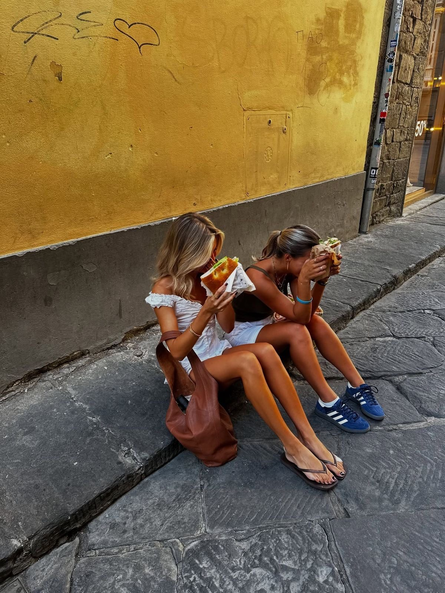
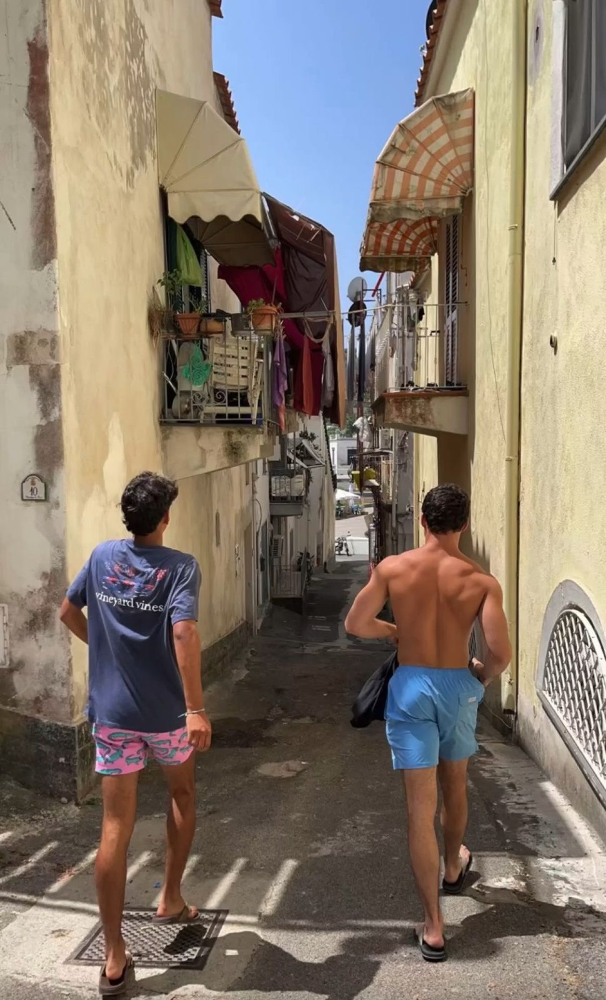

Places worth the trip.
Pick a home base, keep a running weekend list, and remember that some of the best days aren't on the itinerary.
Sorrento & the coast
Think long lunches, narrow streets, coastal views, and days that somehow turn into nights. A fun idea for a weekend away from your study-abroad home base.
- Build in time to wander, not just check off sights.
- Check transport schedules before committing to a late return.
- Bring comfortable shoes for steep streets and uneven pavement.
Florence, between classes
Not every highlight needs a reservation. Grab something to eat, find a sunny spot, and take the long way home.
For a longer stay, research your university program, housing, transit options, and neighborhood safety before choosing where to live.


Leave room for the unplanned.
Choose a destination by travel time, total budget, and what you actually want to do. A nearby town can be just as memorable as a big-name capital.
Before booking: compare return transportation, accommodation location, and any entry requirements using official sources.